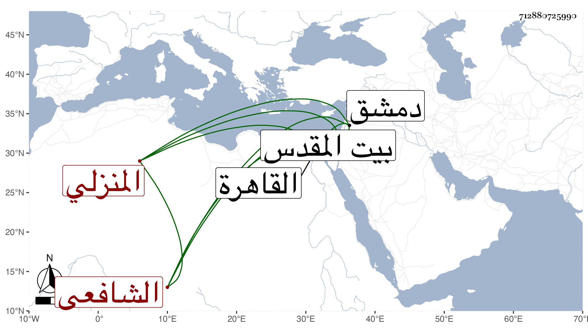

0902Sakhawi.DawLamic.ITO20230111-ara1.EIS1600.712880725990
Biography ID: 712880725990
631
علي بن أحمد بن محمد بن سويدان بالتصغير ابن خلف بن ظهير بالتكبير نور الدين المنزلي الشافعي ويعرف بابن سويدان وهو لقب جسده محمد وربما يجعل أبا لمحمد وهو غير ناصر الدين محمد بن محمد بن يوسف بن يحيى المنزلي أيضا المعروف بابن سويدان . ولد تقريبا سنة ثمانين وسبعمائة بمنزلة بني حسون جوار منية بدران ونشأ بها فحفظ القرآن والعمدة والملحة وبعض الحاوي الفرعي وحضر دروس الشمس الغراقي وابن المجدي والشمس الحنفي الصوفي ومواعيد السراج البلقيني واشتغل بالعروض على أحمد البجائي ، وحج في سنة ست وثلاثين وزار بيت المقدس مرارا وكذا سافر إلى دمشق للتجارة غير مرة وإلى القاهرة وكان شيخا وقورا مقبول الشكل بهيا فكها حلو النادرة جميل الطريقة محمود السيرة له مشاركة في النحو وغيره مع ذكاء وسرعة جواب وغوص على النكت ونظم جيد منسجم ، وممن لقيه ابن فهد والبقاعي فكتب عنه الكثير ومن ذلك ما نظمه لمن ختم القرآن وأوله :
| طوبى لمن قرأ القرآن فأحكمه | ولمن وعاه بسمعه وتفهمه |
| ولمن تهجد في مصلاه به | ولمن تدبره وحل مترجمه |
| ولمن أحل حلاله وأتى على | تحريم ما فيه الحرام فحرمه |
إلى آخرها ومنه :
| لاعبتها الشطرنج ثم ضربتها | بالرخ شاه سترت بالفيل |
| قالت فنفسك قلت قد حصنتها | لكن خذي فرسي فداك وفا لي |
وقوله :
| ومليح أتمنى طول عمري منه وصلا | قلت صلني قاله مه لن قلت مهلا |
مات في ذي القعدة سنة ثلاث وأربعين بالمنزلة رحمه الله .
